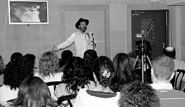

ר’ עמי ברעם עסק שנים רבות בתחום העסקי. הוא ניהל מערכים גדולים ועשה לביתו. עד שמצ
ר’ עמי ברעם עסק שנים רבות בתחום העסקי. הוא ניהל מערכים גדולים ועשה לביתו. עד שמצא את עצמו במשבר בחייו האישיים: הוא חזר בתשובה, כשאשתו נותרה מאחור. בשלב הראשון הוא ניסה לדאוג לעצמו וגיבש סביבו קבוצת זוגות שמתמודדים עם אותה זוגיות. בשלב השני הפכה היוזמה הפרטית לארגון מצליח • כיום הפכה עמותת “התקשרות”
ר’ עמי ברעם עסק שנים רבות בתחום העסקי. הוא ניהל מערכים גדולים ועשה לביתו. עד שמצא את עצמו במשבר בחייו האישיים: הוא חזר בתשובה, כשאשתו נותרה מאחור. בשלב הראשון הוא ניסה לדאוג לעצמו וגיבש סביבו קבוצת זוגות שמתמודדים עם אותה זוגיות. בשלב השני הפכה היוזמה הפרטית לארגון מצליח • כיום הפכה עמותת “התקשרות” לארגון שמארגן סמינרים עם מאות מקורבים – ללא כל קשר לפערים הדתיים • בראיון מרתק לבית משיח מספר הרב ברעם על ההתמודדות של הזוגות, על הקשיים וההצלחות, ויש לו גם מסר ברור לשלוחים על תפקידם בליווי זוגות עם פערים דתיים
בשנים האחרונות הפך ארגון “התקשרות” לביתם של זוגות עם פערים דתיים בזוגיות. הארגון אמנם יוזם סמינרים ומפגשים גם למקורבים שמעוניינים להרחיב את ידיעותיהם ביהדות ובפרט בתורת חסידות חב”ד, אולם העובדה שבני הזוג ר’ עמי ורעייתו אביטל ברעם החליטו להרים את הדגל ולהוות בית לזוגות שמצאו עצמם בקונפליקט במהלך התשובה, הספיקה לעשרות משפחות למצוא בסדנאות ובסמינרים של “התקשרות” בית חם ואוהב. רבים מהם מספרים על מהפך בחיי הזוגיות, מאז המפגש עם “התקשרות”. לחלקם הציל הארגון את הזוגיות – ולאחרים דווקא את תהליך התשובה… בסדנאות שהוא מעביר לזוגות עם פערים דתיים הוא מסביר להם שאת העבודה הם צריכים לעשות בעצמם – הוא רק יכול לתת להם כלים שיסייעו להם לפעול בצורה נכונה.
“באופן כללי יש שני שלבים בתהליך הזה: בשלב הראשון בני הזוג עדיין בכלל לא מבינים שהם נמצאים בעיצומו של תהליך; לוקח לבני הזוג הרבה זמן להבין מה עובר עליהם בכלל. בהתחלה אחד מבני הזוג מתחיל להתעניין ביהדות ומתחיל ליישם בהדרגה אורח חיים דתי ובן או בת הזוג בטוחים שמדובר על טרנד חולף שבוודאי יגמר בתוך זמן קצר. לרוב הזוגות המצב הזה נמשך בערך שנה, שבה בן הזוג השני הודף את המציאות החדשה שנכנסה לחייו וחי בהדחקה. אנשים אומרים לעצמם ‘לא יכול להיות. לי זה לא קורה’. הם בכלל לא מבינים שהצד השני רציני ושמעכשיו הם צריכים להתרגל למציאות חדשה.
בשלב השני אנשים מתחילים להבין שיש כאן מציאות חדשה ואז הם מרגישים שניחתה עליהם פצצה בבית. הם פתאום קולטים שלא מדובר על שיגעון חולף, אלא על אורח חיים שבן או בת הזוג החליטו לאמץ ומכאן ולהבא כל מה שהיה כבר לא יהיה. בשלב הזה הצד השני צריך להגיע לבחירה רצינית ולהחליט מה הוא עושה עם המציאות החדשה.
הבעיה שבה אנחנו נתקלנו היא שרוב הזוגות שמוצאים את עצמם בקונפליקט בעקבות התקרבות ליהדות של אחד מבני הזוג, מרגישים שהם נמצאים לגמרי לבד בעולם שלהם. במהלך התקופה הראשונה, הם נבוכים ולא יודעים שיש כיום הרבה זוגות כמותם, עד שהם מעכלים את המצב החדש, נוצר שבר אמוני משמעותי מאד בביטחון שלהם בבן הזוג. התחושה היא של בגידה. כאילו בן הזוג בגד בי ומצא לו קשר חדש – עם הקב”ה – ומעכשיו הקשר הזה חשוב לו יותר ממני.
בכל מתח שמתעורר בן הזוג מרגיש שכעת כבר לא אני חשוב אלא בן הזוג מעניק משמעות לקשר אחר – עם היהדות – והקשר החדש הוא מה שמנהל את הבית. המתחים האלו מתעוררים בקשר לכל הרבדים בחיים: לנסוע לים עם הילדים בשבת או לא? כשרות? לאיזה מסעדה אפשר לצאת לבלות? עם איזה חברים לצאת? בכל תחום בחיים מתעוררים מתחים. פתאום אי אפשר להמשיך את החיים שהיו לפני זה. הכל נעצר. אדם מרגיש שהקשר הזוגי הפך להיות עבור בן או בת הזוג משני וזניח”.
מה קורה בשלב הזה?
“מי שמגיע אלינו לומד לעלות על דרך חדשה. מי שלא מקבל הדרכה נכונה בשלב הזה מוצא את עצמו עם ריחוק וניכור שהולך וגדל. הפערים הולכים וגדלים ואיתם התחושות הקשות. ברוב המקרים, או שאחד מבני הזוג נכנע, ואז יש מצב של זוגיות מאד לא בריאה של ריצוי ותחושת הקרבה, שבסוף מתפוצצת בשלב מאוחר יותר; או שממשיכים לחיות בחיכוך מתמיד שמוליד המון מתחים וכעסים, כשעיקר הנזק שנגרם הוא לילדים עד כדי פגיעה בבריאות נפשם”.
מה הכוונה שמי שמגיע אליכם עולה על דרך חדשה? מה אתם מציגים למי שמגיע אליכם?
“אין לנו תרופות קסם לאף אחד. אנשים מגיעים ובטוחים שניתן להם את הפיתרון שאיתו הם יתחילו לחיות בשלום. אנחנו מבהירים לאנשים שאת העבודה האמיתית הם צריכים לעשות בעצמם. אבל אנחנו מעניקים להם כלים. קודם כל אנחנו משקפים להם את המצב וגורמים להם להסתכל לראי – אולי בפעם הראשונה במהלך התהליך – ולהבין מה קורה.
אחרי שבני הזוג הבינו באיזו מציאות הם נמצאים, אנחנו מסבירים להם שכאן הם צריכים לעשות בחירה אחראית: אם לא רוצים לפרק את הבית ורוצים להמשיך לחיות ביחד, חייבים להבין שנדרשת המון עבודה, וחייבים להיות מוכנים להפשיל שרוולים ולעבוד. לא ניתן לכפות בכוח אף אחד. אף אחד לא נכנס לשם מכפיה, אלא מרצון ובחירה. אם בן או בת הזוג רוצים להמשיך לחיות במציאות הזוגית הם צריכים לדעת שזו בהחלט אפשרי. מדובר על בחירה של בני הזוג והם צריכים להיות מוכנים לשלם את המחיר. לשם כך נדרשת עבודה של הבנת הזוגיות בכלל– איך אפשר לצאת מהלבד ולמצוא דרכים להתאחד? שהרי זוהי התכלית של הזוגיות. בהתאחדות יש צורך להרגיש את השני ולהיות אכפתי כלפי השני. בן זוג שמאוים לא שלם בעצמו לא יכול להתחשב, אדם ששלם עם מקומו מסוגל מאוד לתת מעצמו. ללמוד להסכים לאט-לאט למציאות החדשה ולהפסיק לחיות בתחושת קורבן בהרגשה שהם הקריבו ונכנעו רק בשביל השני”.
איך מסבירים לבן הזוג שלא שינה דבר בחייו שנדרשת ממנו כעת עבודה?
“כשהזוגות מגיעים לסדנא הם פוגשים זוגות נוספים כמותם וזה מאוד מרכך את הצד שחושש שאולי יש כאן תעמולה נגדו ומנסים להחזיר אותו בתשובה. אנחנו לא כופים על אף אחד, אלא מסבירים לו שאי אפשר להתכחש למציאות. זו המציאות החדשה של חייו וצריכה להיות כעת בחירה אמיצה וחשובה. אני אומר לזוגות שמגיעים אלינו “אתה יכול לפרק את הבית וללכת”. אבל אם מישהו הגיע אלינו כנראה שהוא לא רוצה לעשות את זה. “אז אם אתה באמת לא רוצה לפרק את החבילה, יש לך כאן אוצר גדול של כלים שיאפשרו לך לבנות את ביתך”.
זו התשובה האמיתית. לבנות זוגיות חדשה מתוך ההחלטה המשותפת. קודם כל צריכים להבין שמה שהיה נגמר. אי אפשר להתכחש למציאות ואדם חייב להבין את המציאות החדשה שלו עכשיו השאלה מה עושים.
היועצים המקצועיים יוצאים מתוך נקודת הנחה שברוב המקרים כשאחד מבני הזוג עשה כזה מהלך לבד והשאיר את בן הזוג מאחור, יש סבירות להניח שהבעיה הזוגית הייתה גם קודם לכן. כרגע אמנם הבעיה התלבשה על הנושא הזה, אבל למעשה הבעיות בזוגיות היו קודם לכן. אם הן לא היו מתעוררות על חזרה בתשובה, הן היו מופיעות כשהבעל היה רוצה לצאת לשחק כדורגל בשבת במקום לנסוע לטייל או כשהאישה הייתה רוצה לצאת לבית-קפה עם חברות…
השוני הוא שבתחום הזה, של חזרה בתשובה, החיכוך הרבה יותר חזק מאחר וזה נמצא בכל רבדי החיים גם הקטנים ביותר. אדם שחוזר בתשובה בטוח שכל מה שהוא עושה נעשה בשם הקדושה… לכן הוא יוצא מתוך נקודת הנחה שהוא נוהג בסדר ושהבעיה נמצאת אצל הצד השני שלא מוכן לקבל את האמת”.
לחבר גשמיות עם רוחניות
ארגון “התקשרות” מקיים לאורך השנה כולה סנדאות הכוללות עשרה מפגשים לזוגות עם פערים. בסדנאות אלו משתלבים זוגות שרוצים להיכנס לתהליך של בניית זוגיות מחודשת מתוך המצב החדש שנוצר.
ברשימת המקצוענים שמלווים את הפעילות של “התקשרות” נבחרו לאור הניסיון אנשי מקצוע מובילים שמבינים את המורכבות הנדרשת ביניהם נמנית הפסיכולוגית אסתר מייזליש מכפר חב”ד שהיא גם היועצת המקצועית של הסדנאות, הרב יצחק ערד, ד”ר אילנה ישראל, היועץ יונתן סגל וכן הגב’ אביטל ברעם שכיום היא בעצמה מאמנת אישית וקבוצתית, הגב’ יעל ויסמן, ר’ תומר רטהוז ורעיתו, ור’ אסף יחזקאל, שמוסרים את עצמם כל אחד מניסיונו ובתפקידו שלו למען הצלחת הפעילות וכן יועצים מקצועיים נוספים, המלווים את התהליכים.
“הרעיון הוא לאפשר לכל זוג למצוא את הדרך שלו, בה הוא מחליט ליצור את המציאות החדשה של החיים. באחד המפגשים אנו מפגישים את הזוגות עם זוגות שחיים כך שנים ועברו תהליך דומה – במסגרתו אחד מהצדדים חזר בתשובה והם החליטו למצוא דרך להמשיך את החיים המשותפים. יש לכל זוג את הדרך שבה הוא בחר ללכת – והרבה זוגות מצאו דרכים יצירתיות מאד כדי ליצור את המרחב המשותף כך שיהיה מוסכם על כל הצדדים”.
מה קורה אם אחד מהצדדים לא מוכן להתפשר ולבוא לקראת השני?
“אנחנו אכן נתקלים מדי פעם במצבים קיצוניים, כשלפעמים אחד מהצדדים מתבצר בעמדתו, או לחילופין מתחיל להתקדם מהר מידי, ואז השבר חזק יותר. במקרים כאלה אנו מפנים לטיפול אישי, בתקווה שזה יעזור להם. למרות זאת גם טיפול לא תמיד עוזר. יש לנו זוג ששלחנו בסוף הסדנא לטיפול אישי אך לצערנו גם זה לא עזר והם הפסיקו את הטיפול. כמובן שעדיין אנו מנסים להגיע אליהם פנימה באמצעות הקשר האישי שהוא מאוד חשוב בתהליך. אבל מי שלא רוצה לעזור לעצמו לא ניתן לעזור לו.
ברוב המקרים הזוגות מגיעים אלינו בשלב שהם מבינים במשותף שיש בעיה משמעותית שצריכים לטפל בה. הם מבינים שאם הם לא יטפלו בבעיות עכשיו הם יגיעו למצב בלתי אפשרי”.
איך מחברים שני קטבים כל-כך רחוקים?
“בדיוק כמו שמחברים בין גשמיות לרוחניות ונדרש מאיתנו הרבה לימוד והתבוננות בכדי להצליח, כך גם בזוגיות הדרך להצליח היא להחליף משקפיים ולהתחיל להסתכל יותר פנימה. בלי עבודה פנימית זה לא יעבוד. רק שאצל הזוגות האלו זה קריטי כי אין להם אפשרות שלא לעסוק בעבודת הזוגיות, יום-יום שעה-שעה. בסדנאות הם מגלים מילה מאוד חשובה שנקראת אחריות – כלפי הבית וכלפי הילדים. לכל אחד יש את העולם שלו – את הקריירה שלו, התחביבים שלו – ובני הזוג צריכים ללמוד לכבד ולתמוך כל אחד בעולמו שלו. באמצע יש את העולם המשותף שאותו צריכים ללמוד לחבר ולטפח – ועל המשותף אנו עובדים ולומדים איך למצוא נקודות משותפות שעליהם אין קונפליקט ובהם מתמקדים. כל העבודה היא “מעט אור דוחה הרבה חושך”.
“העבודה של בן הזוג שחזר בתשובה היא להניח לאשתו ולהפסיק לרצות לשנות אותה. כל עוד יש את הניסיון שהשני ישתנה – כי אני יודע מה טוב בשבילו – הדרישה הזו יוצרת המון התנגדות. כאן מתחיל התהליך האמיתי של החזרה בתשובה… לחזור בתשובה באמת – בתהליך פנימי, שדורש לשים את מה אני רוצה בצד ולראות מה צריך אותי. כי כשאנו נתחיל לעשות את השינוי הפנימי, כלומר נתחיל להסתכל קצת יותר פנימה – נבין שמי שמנהל אותנו זה הפחד והפחד לא מאפשר לתת מקום לידנו. למעשה אם הבעל חזר בתשובה הוא לא יכול לדרוש מאשתו שום דבר – הוא לא יכול לכפות עליה את אורח החיים שהוא רוצה. כאן מתחילה העבודה היותר דקה ופנימית: להתחיל לחיות למרות המציאות. להתחיל לחיות בשמחה בקרבת השונה וההפוך. כאשר מפנימים ומאפשרים ותומכים בבן הזוג, גם כשהוא עושה דברים הפוכים ממך, בדרך ממילא מתחילים להיות משפיעים.
זה תהליך שדורש המון זמן ועבודה. לכן בינתיים אנו מתמקדים בטכניקות תקשורת ליצירת דרכים יצירתיות למסגרת חדשה.
אז למעשה מה שאתם אומרים למי שחזר בתשובה ורוצה להמשיך לשמור על הזוגיות שהוא חייב לוותר כל הזמן?
“ויתור זו מילה בעייתית. כי כשאני מוותר, אני מחכה בפינה לקבל תגמול. לא הייתי משתמש במושג הזה, כי זה מכניס אותנו למקום של “קורבן”, שסובל בשביל העקרונות שלו, וזוהי אחת התחושות ההרסניות בזוגיות ובחיים בכלל.
הייתי משתמש במילה אחריות. אחריות זו הבנה שיש לי משפחה ואני עושה את ההחלטות שלי מתוך תהליך של בחירה והבנה של תהליך של בניה גם אם אני לא רואה עכשיו את התוצאות אני מבין שאני בונה את בייתי ואולי בעתיד אזכה לראות את התוצאות ואולי גם לא והכל בסדר. יש פה תהליך עם כוונה ומטרה משמעותית בשבילה הוא מוכן להתייגע. לא כי לקחו לי את המקום ועכשיו אני סובל אני מסכן, אלא כי יש לי אישה וילדים ואני רוצה את טובתם ולפעמים זה גם לפני טובתי וזו אולי טובתי האמיתית. כשמתאמנים לחשוב כך, הוויתורים הם לא וויתורים. מבינים שמה שחשוב זה הרגע הזה מה שחשוב זה התהליך ולכן אנו צריכים קבלת עול ולא לנהוג מתוך הפקרות של מה “בא לי”.
נשמע שכל העבודה היא רק של הצד שחזר בתשובה ואין אף אחריות לצד השני.
כשאחד מבני הזוג מתחיל בתהליך של תשובה, אנחנו שומעים הרבה את המשפט “הרי התחתנו “חילונים”, זה אתה שהחלטת להשתנות”. אבל למעשה כשמגיעים לעבודה זוגית אין את הצד הזה והצד ההוא. שניהם נמצאים ביחד בעבודה ודורשים מהם בדיוק את אותה יגיעה. מהצד שלא חוזר בתשובה נדרשת עבודה של הסכמה ולאחר מכן תמיכה בתהליך, הוא צריך לחיות ליד ההפוך והשונה בדיוק כמו החוזר בתשובה, הרבה פעמים הוא מפחד ממה יגידו יש כאן חשש משינוי תדמית, אנו חיים בעיר חילונית למהדרין ועכשיו אתה מתחיל להשתנות, הרי יש שינויים בכל הנושאים של כשרות, שבת, חופשות, תרבות הפנאי; ועכשיו זה לא כמו שהיה.
מצד שני החוזר בתשובה צריך להבין שהוא בחר בזה כאשר הוא כבר נשוי ויש לו משפחה ולכן ובפרט כשומר תורה ומצוות נדרשת ממנו עבודה, עם הרבה הקשבה וסובלנות. עליו למתן את האורות וההתלהבות למרות הקושי – וזה קשה מאד למי שנמצא בתחילת תהליך של תשובה.
בלי קסמים: צריך לעבוד!
המוטו ששומע כל מה שמגיע לארגון “התקשרות” הוא “אין נוסחת קסמים”. הרב ברעם מסביר כי ראשית אדם צריך להבין שאין לו פיתרון אחד, שהוא יכול לנהוג לפיו והכל יסתדר מאליו.
אנחנו נותנים להם כלים למצוא דרכים יצירתיות שהדברים יעבדו. למשל בשבת – המרחב הציבורי שומר שבת – ובמרחב הפרטי יש לכל אחד את הפרטיות שלו. כל הזמן החיים מזמנים לנו היפוכים וניסיונות וקשה לנו לקבל את מה שלא מתאים לנו. וכאן זה בבית שלך – הכי קרוב, הכי נוגע, בילדים שלך, ואתה צריך לעמוד שם בחדר ולחייך. זו עבודה של “אורות דתוהו בכלים דתיקון” – לעשות את העבודה הכי פנימית וכל הזמן למתן את עצמך כלפי הסביבה הקרובה אליך. זה תהליך של צמיחה, כי מי שבוחר לעשות במקום הזה עבודה זוכה להקים בתים מאד יפים. במציאות כזו אתה לא יכול לברוח מעבודה. אתה עושה קידוש בליל שבת ואחר כך המשפחה הולכת לים…
אז איפה נקודת החיבור?
בני הזוג מגיעים להסכמה. קודם הם לא יודעו איך אפשר להסתדר ופתאום מצאו מה עובד בשבילם. כל אחד לומד להכיל את השני. ביצירה המשותפת יש הרבה עבודה זוגית, שהיא מצמיחה. יש המון תקשורת שבונה זוגיות, כי על כל דבר צריכים לדבר ולנסות להבין אחד את השני. אם יש כלים נכונים פשוט בונים מרחב חדש והופכים את המצב החדש – שהוא כביכול חיסרון – ליתרון.
אז עכשיו הם צריכים לחיות כך לנצח?
“נקודת ההנחה היא שכן. בני הזוג צריכים לקבל את השני ככה ולהבין שיתכן שלעולם הוא לא ישתנה. אבל אנחנו יודעים שכל מצב טבעי יכול להשתנות. אם ההתנהלות שלנו תהיה מעל הטבע – גם הצד השני ייצא מהטבע שלו. אם רוצים להשפיע אי אפשר לכפות רצונות צריך לגרום לשני להרגיש את התענוג שבדבר ואז אולי יתפתח אצלו רצון לדבר. אם אתה רוצה שאשתך תשמור שבת, אתה צריך לראות איך אתה יוצר אצלה תענוג מהשבת.
אבל הכל בבית נראה הפוך.
“לזה בדיוק הכוונה שכדי לשנות את הטבע נדרשת עבודה מעל טעם ודעת; לזכור שכל המציאות המורכבת הזו היא לא במקרה וכל התהליך הזה מושגח. זאת בדיוק עבודת הביטחון ואם מצליחים להסתכל על הזוגיות כך ופועלים בידיעה שאת ההפוך הזה נתן לי ה’, מגלים שההפוך הוא רק בחיצונית. העבודה היא להפסיק להפריע לבן הזוג – ואז גם בן הזוג מתחיל להתקרב. זה בדיוק תהליך של גאולה, איך שהרבי מחנך אותנו לחיות”.
“בעל תשובה נמצא באורות ובהתלהבות והוא צריך להבין שהתשובה שלו היא פנימית ולא מתבטאת רק בשינויים חיצוניים”.
לפעמים השליח צריך למתן את ההתקרבות
מה התפקיד של השליח המקרב בשלב הזה?
“אם בדרך כלל כשיש מקורב התפקיד של השליח הוא להמריץ אותו ולקדם אותו, כאן התפקיד לפעמים הוא דווקא למתן אותו וללמד אותו לעשות את הדברים בתהליך מדורג. צריכים כמובן להבין את הבן אדם – שעכשיו הוא מגלה את היהדות והכל נראה לו קסום והוא רוצה לקבל על עצמו הכל. אבל מהצד השני גם ללמד אותו איך לעשות את הדברים. אי אפשר להגיד ליהודי שרוצה לקבל על עצמו כעת את כל ההידורים שלא לנהוג כך, אבל לפעמים יושבים בהתוועדות וכל המקורבים “מתלבשים” על אחד כזה שיתחיל להתנהג כמו “שפיץ חב”ד”, בזמן שבשבילו העבודה לפעמים היא לחכות ולאפשר לאשתו להגיע למקום שלו, ואם יקבל על עצמו דבר כזה עכשיו, הוא ישבור את כל הכלים ויאבד את המשפחה. זה נורא קשה כי זה נוגד את הטבע של השליח, אבל יש זמנים שהוא צריך לדעת שכדי לבנות את התהליך כמו שצריך, כדי שכל המשפחה תהיה בענין, הוא צריך למתן את המקורב שלו.
איך יודעים מתי מתאים ומתי לא?
“אסור כמובן להחליט לבד. בכל שאלה כזו חייבים לשאול רב, אבל גם צריכים לדעת איך לשאול את הרב – ולהסביר לו את המצב. מדובר בשאלות הלכתיות ולכן השליח לא יכול לפסוק בעצמו, אבל הוא צריך גם את הענווה להפנות לרב המתאים שיידע לפסוק לפי הענין. אני רוצה לציין במיוחד את הרב מנחם מענדל גלוכובסקי, הרב יוסף חיים גינזבורג והרב יצחק ערד, ששלושתם מבינים את התחום הזה ומכירים אותו מקרוב ויודעים להנחות בצורה נכונה, כפי שראינו שההנחיות שלהם הניבו פירות והצילו בתים שלמים. לעומת זאת שלוחים שלא מבינים את המורכבות ופוסקים על דעת עצמם, יכולים לעשות טעויות קריטיות עם השלכות לטווח הארוך.
“הרבה פעמים הבעל תשובה מחפש תשובות של מחמירים גם בענייני הלכה והנטייה הטבעית של השליח היא ללכת איתו בכיוון הזה. השליח רוצה לראות תוצאות בשטח – מה שקוראים בשפה החב”דית “לראות עוד סירטוקים” בקהילה שלו. אבל אם רוצים בטובתו צריכים להיות מסוגלים להגיד למקורב את האמת – ולפעמים האמת היא שעכשיו הוא צריך לעשות את הדברים פחות מהר. השליח צריך לעודד אותו לעלות מהמקום שלו – ולא מהמקום של השליח. הנקודה הזו היא קריטית, כי השליח חייב להבין את המורכבות של הבית ולראות איך מצליחים לעבור את התהליך הזה בלי לשרוף את הבית.
איך אתם מצליחים להגיע גם אל הצד שלא התקרב?
“בדרך כלל אחרי סדנא או סמינר מגיעים אלינו הבעל או האישה שלא התקרבו ואומרים לנו תודה. הם מרגישים שאנחנו מצילים להם את הבית. דווקא זה שחוזר בתשובה הוא קצת בבעיה איתנו… כי פתאום הוא שומע שהוא צריך בכלל לעשות עבודה ולפעמים אנחנו אומרים דברים שלא נעים לשמוע. פגשתי עכשיו זוג בסמינר שעשינו שהבעל – שחזר בתשובה – פשוט לא ראה את אשתו. ישבתי איתו לילה שלם והתוועדתי איתו ואמרתי לו גם דברים. אמרתי לו שהוא חייב להבין קודם מה זה תשובה – איך חוזרים בתשובה – כדי לדרוש מאשתו להשתנות. שיקפתי לו שהוא כל-כך עסוק בהתקדמות האישית שלו שהוא בכלל לא מבין מה זה להתקרב אל ה’. פתאום מישהו אמר לו את האמת בפרצוף וזה לא היה קל, אבל בסוף הוא התחיל להקשיב והבין שהוא חייב לשנות גישה.
אנחנו מקיימים סדנאות קבועות לכל מעגל הזוגות שנמצאים איתנו בקשר, למשל לפני זמנים רגישים כמו פסח, שבהם יש הרבה קונפליקטים. יש קשר אישי מאד חזק בין כל הזוגות ומצליחים לחבר את כל הזוגות לקבוצה מגובשת.
מה עם חינוך הילדים?
חינוך ילדים זה הנושא המורכב ביותר בין זוגות עם פערים. הנקודה היא שילד יכול לחיות טוב עם זה שאבא דתי ואמא לא – או להפך, אבל הוא לא יכול לחיות ולצמוח עם זה שאבא ואמא רבים. באופן טבעי כל צד מנסה מאד חזק למשוך לצד שלו וכשהילד מרגיש שהוא נמצא במוקד מריבה הוא בדרך כלל מתמרד נגד שני ההורים ובורח משניהם. ילד לא יכול לחיות בבית שאבא ואמא רבים והוא באמצע. התפקיד של ההורה שחזר בתשובה היא לנסות להעניק לילד חום ואהבה ולאפשר לו לרצות ללכת בדרך שלו. ההורה צריך לאפשר לילד להגיע אליו ולא לנסות למשוך אותו בכוח. כשההורה מנסה למשוך את הילד בכוח, הרי כל משיכה כזו פועלת נגדו, כי זה מוליד התנגדות של ההורה השני והילד לא יכול להתחבר לזה. כמו בחינוך של כל ילד, התפקיד הוא לאפשר לילד את התנאים; כששותלים עץ תפקדינו להשקות ולתחם את העץ ולהתפלל שיגדל כמו שצריך. ככל שאתה מתערב פחות – התוצאות הם יותר טובות. כמו בכל תחום, ככל שאני פחות רוצה – ברצון אישי, רצון חיצוני – יש יותר מקום לרצון האמיתי להיכנס.
אז מי שחזר בתשובה צריך כל הזמן לנשוך שפתיים?
“לנשוך שפתיים זו עדיין תנועה חיצונית. המצב האמיתי הוא שהוא צריך להיות במקום של ביטחון. כמו שהרבי מסביר שהעבודה של “חשוב טוב – יהיה טוב”, היא שכשאתה רואה את החוב בבנק ואתה נלחץ ונכנס להיסטריה, אתה באמת לא רואה את הפיתרון. אתה לא מסוגל לראות את המתנה שה’ מזמן לך בניסיון כעת אם אתה רואה אותו בראייה שלילית. אבל כשאתה מבין שהכל טוב ושיש לך כאן איזו הזדמנות, אתה פתאום מוצא את הדרך לצאת מהמצוקה ואתה מגלה שיש לך אפשרות לפתור את כל הבעיות. ככה גם בזוגיות, ראיה חיובית היא לא רק ענין רוחני, אלא היא הדרך הכי ברורה לצאת מהמשבר. כשאדם מכווץ – נושך שפתיים – הוא נכנס לחרדה ודואג כל הזמן, “מה יהיה עם הילדים כשהם יגדלו?”, אבל כשהוא נמצא במקום של ראייה חיובית ולא חושש ממה יהיה, הוא כבר מביא לעצמו את הטוב. כשאדם משדר שמחה וביטחון, בדרך ממילא העתיד יהיה טוב יותר. אם אתה שמח ואתה משדר נעימות, ההשפעה שלך בבית תהיה הרבה יותר על הילד. צריכים שבבית יהיה חם ונעים וממילא הכל יהיה בסדר וירצו לקבל ממך את הדרך.
באחד המפגשים שלנו בסדנא אנחנו מביאים זוגות מבוגרים שחיים כך. יש לנו שלושה זוגות כאלו, עם סגנונות שונים.
אצל זוג אחד, האישה באה מבית דתי ואחרי שעזבה את אורח החיים הדתי התחתנה, אבל אחרי כמה שנים החליטה לחזור בתשובה. הם בחרו כזוג לא לדרוש מהילדים שום שינוי והאישה מצידה הניחה לגמרי לילדים ושידרה המון ביטחון בדרך שלה. הם חיים כך כבר 20 שנה ויש להם זוגיות טובה מאד – והיום גם יודעים לצחוק על הקשיים שלהם. ההפתעה אצלם היא ששלושת הילדים שלהם חזרו בתשובה כשהם גדלו. זו דוגמא קלאסית לזוגיות שהיו בה מעט מריבות ולכן הילדים צמחו במציאות בריאה ובחרו את הדרך של התשובה מרצון. היום כבר בעלה שומר שבת ולמרות שאין לו חזות דתית, הוא מאד דתי במובנים רבים.
אצל הזוג השני, הבעל חזר בתשובה וניסה לכפות את התהליך שלו על הבית והמשפחה קיבלה את זה בצורה מאד קשה. הילדים אמנם נכנסו למוסדות חינוך דתיים אבל לצערנו לא רצו להיות שם ובכל מקום שהאבא ניסה לכפות הוא הפסיד. היום הוא מבין את ההשלכות האלו ומנסה לתקן. דווקא הוא יודע להסביר למה חשובה ההכלה של השונה וכמה זה תורם לילד לאחר מכן, כשהוא מגיע לשלב שבו הוא בודק בעצמו את הדרך שלו.
בזוג השלישי הבעל החליט לחזור בתשובה בגיל 40 ובני הזוג מצאו כל מיני דרכים ליצור את המרחב שלהם, בתוך המציאות הזו. הם מספרים על החוויה שלהם מהמקום השלם, כשהם עשו הכל בהסכמה ולמרות שלא הכל חלק ולא הכל פשוט, הם הצליחו למצוא את הדרך שגם האישה באה לקראת הבעל ומתחשבת ברצונות שלו”.
לסיום?
“הרבה זוגות מגיעים אלינו והם רוצים תשובות. הם צריכים לדעת שאין תשובות, אין דרך אחת, אלא לכל זוג יש את הדרך שלו. הם צריכים למצוא את הכלים לפתח תקשורת ולהיכנס לתהליך של תקשורת, בניה והבנה, ואת התשובות הם ימצאו בעצמם. הם צריכים לחשוב ביחד על דרכים יצירתיות שיתאימו להם, כדי ליצור את היחד שלהם.

מפעילות עם זוגות מעורבים לסמינרים ארציים עם מאות מקורבים
כשהרב עמי ברעם מדבר על זוגיות מעורבת, הוא מדבר על עצמו. כשהוא הכיר את אשתו הוא טרם שמר תורה ומצוות, וגם היא. בשנה הראשונה לנישואיהם הוא החל לחזור בתשובה, והזוג הטרי מצא את עצמו מתמודד עם פערים גדולים, שלא היו שם קודם. כדי להתמודד עם מה שקורה, הם מצאו עוד זוגות כמותם והתחילו לעשות שבתות יחד. בהמשך הגיעו גם סדנאות עם פסיכולוגים ויועצי נישואין ולפני חמש שנים הקימו יחד את עמותת “התקשרות”.
“ראינו שהמסגרות הרגילות לא נותנות לנו מענה”, הוא מסביר, “הן מתאימות רק לצד אחד, כך שתמיד הצד השני לא מוצא את עצמו. למשל, בית כנסת. לא פשוט להביא בן זוג חילוני לבית כנסת או כל מקום תורני אחר. זה נראה לו מאיים. אני הרגשתי שאני צריך ליצור מסגרת שתהיה דומה למה שהיא מכירה. לצורך כך הדגשתי את הצד החוויתי והאמנותי שקיימים בדת.
“הבאתי מעולם היהדות צדדים שהיא מכירה, התחלנו להתעסק ביחד באמנות ומדיטציה. המטרה הייתה ליצור סביבה לא מאיימת. ארגנו שבתות וסעודות ביחד לזוגות שנמצאים במצב דומה והיה מקסים”.
בהתחלה ניסה ארגון “התקשרות” לתת מענה לזוגות עם פערים אבל מהר מאד הוא הפך את הסמינרים שלו לפתוחים לציבור הרחב וכיום מגיעים לכל סמינר שלו מאות מקורבים מכל רחבי הארץ, ללא קשר להשקפת עולמם – וכמובן ללא קשר לפערים הדתיים בחייהם.
בשלב הזה הפכה הפעילות עם הזוגות המעורבים לפעילות המשנה של הארגון ומידי חודש יוזם “התקשרות” סמינר בבתי מלון אחר בארץ, אליו מגיעים מאות מקורבים מכל רחבי הארץ.